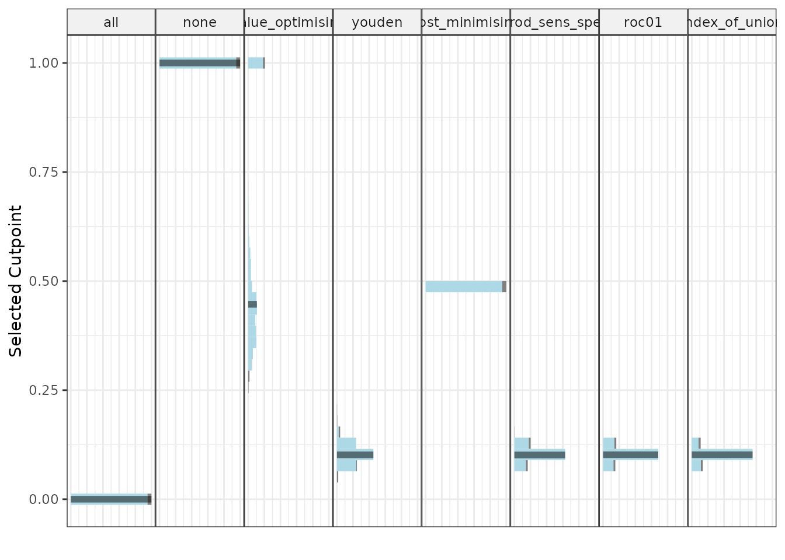
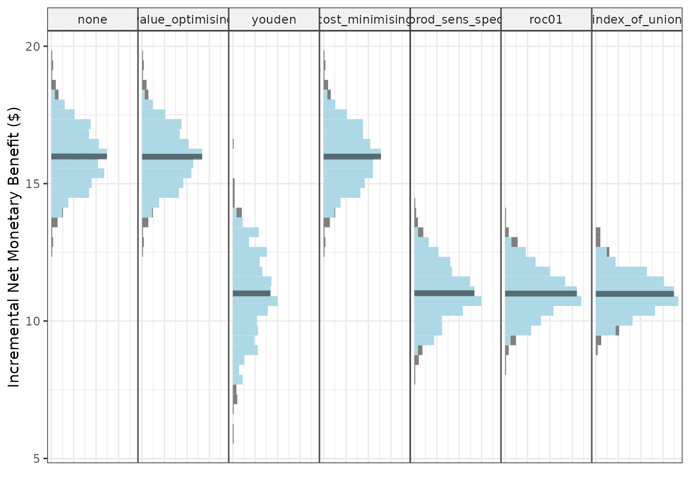
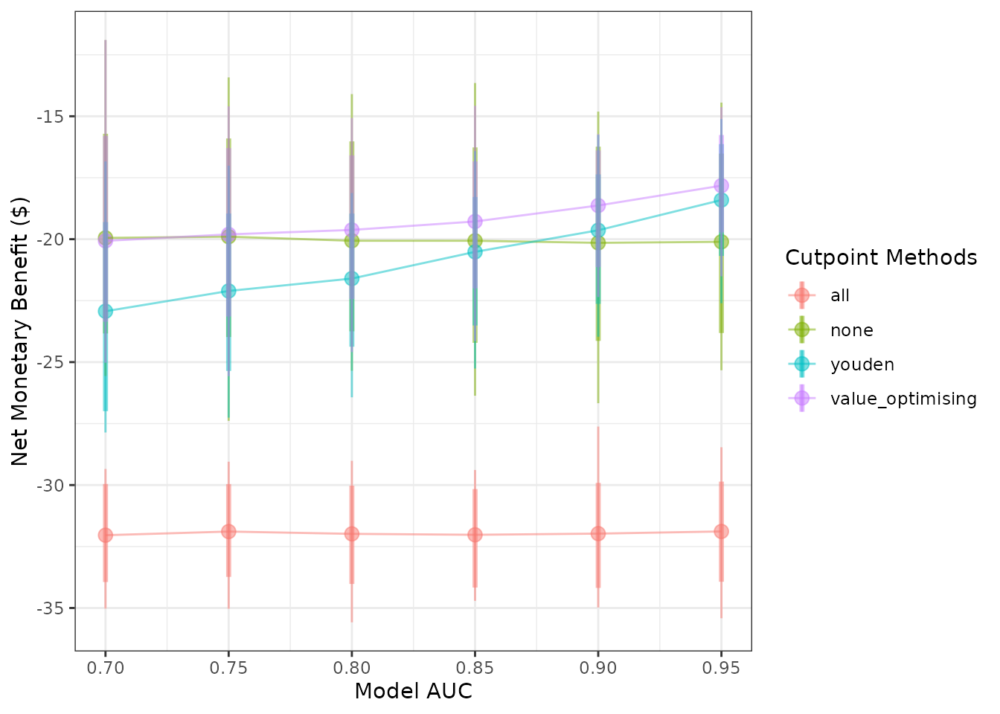
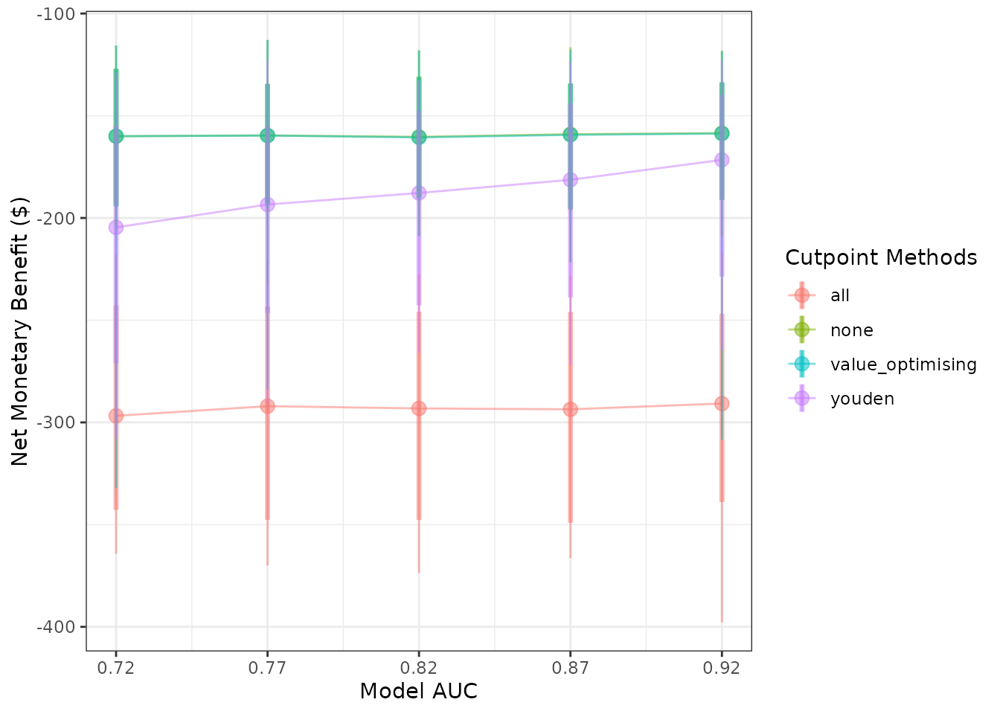
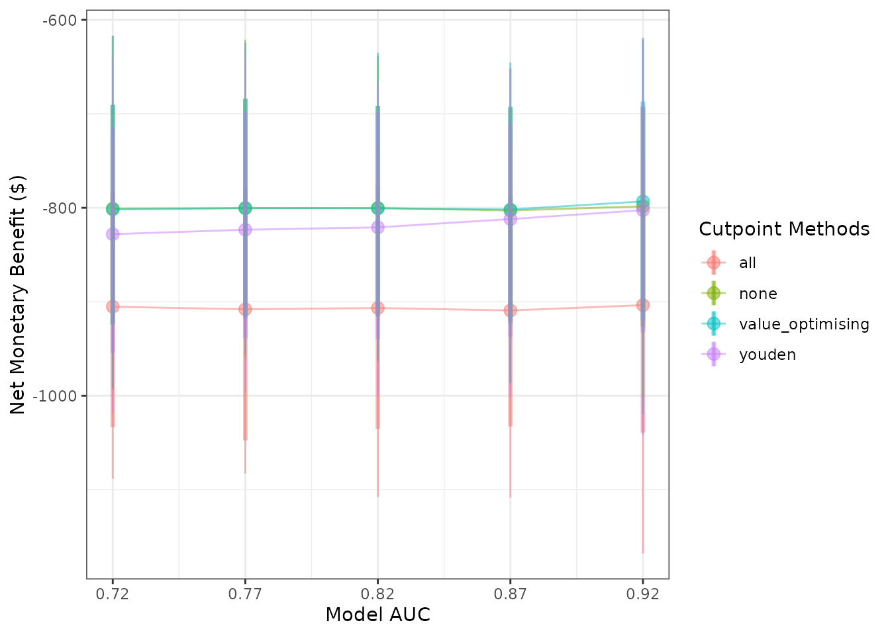
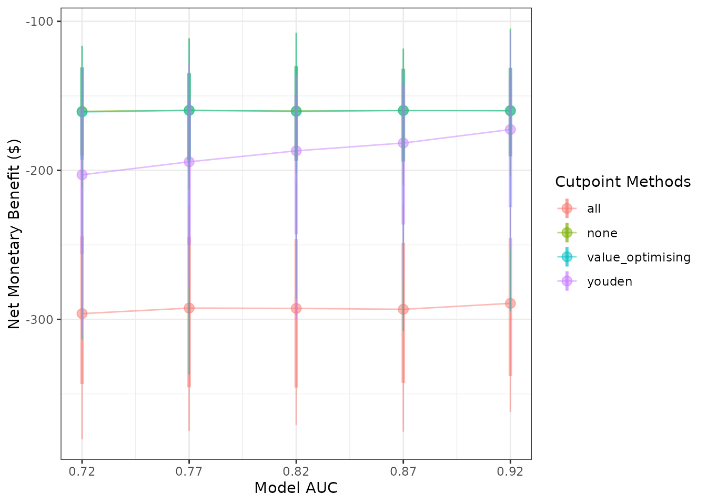
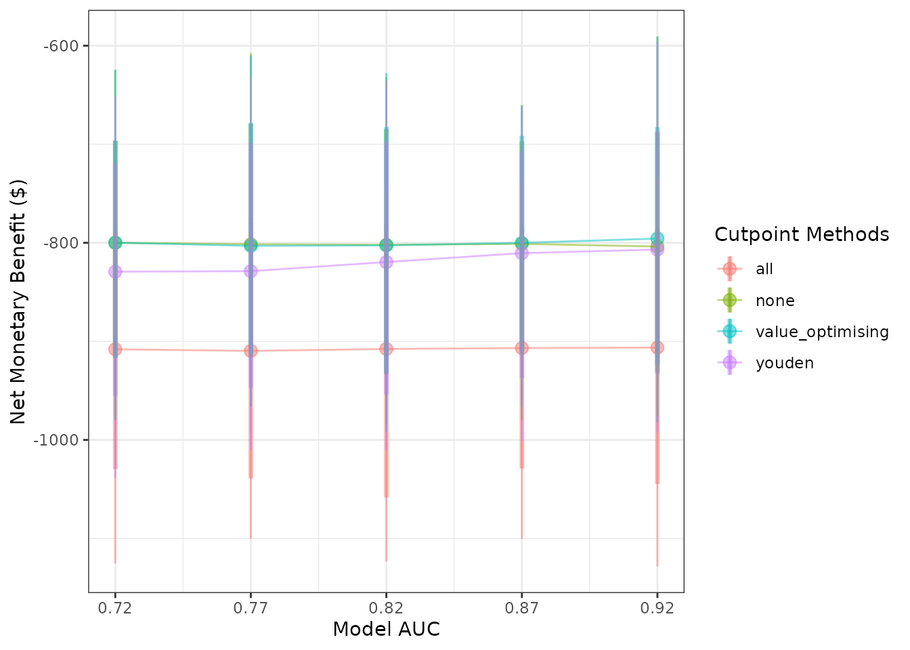
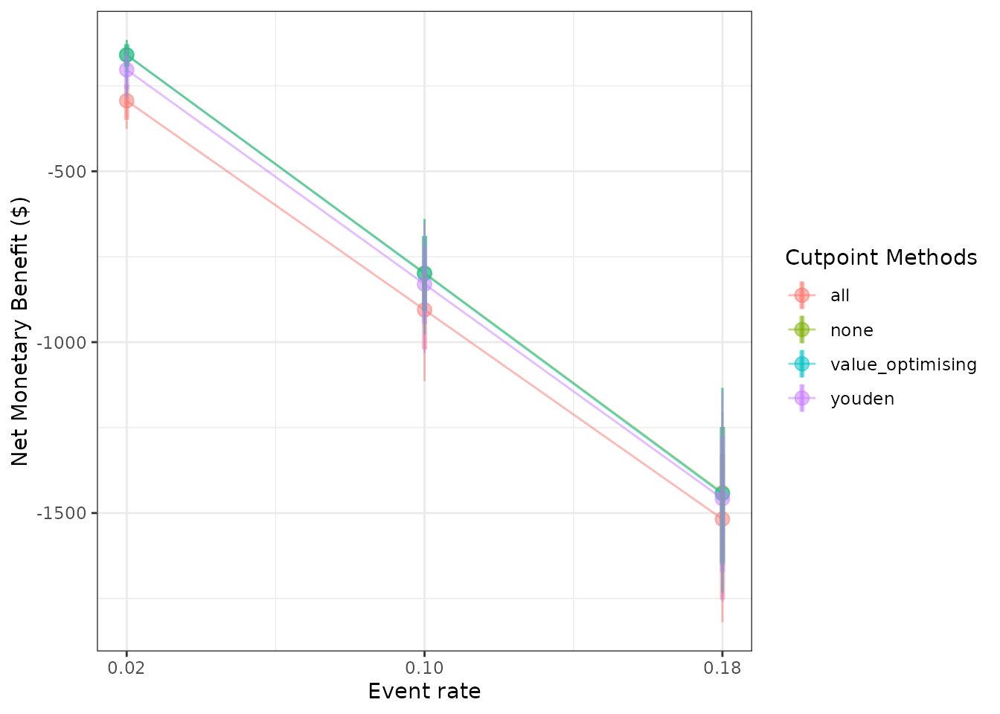

Introduction to predictNMB
Source:vignettes/introduction-to-predictNMB.Rmd
introduction-to-predictNMB.Rmd
{predictNMB}
predictNMB can be used to evaluate existing or hypothetical clinical prediction models based on their Net Monetary Benefit (NMB). This can be relevant to both prognostic and diagnostic models where a cutpoint (AKA, probability threshold) is used to generate predicted classes rather than probabilities. While it is often beneficial in clinical settings to present the user with a predicted probability, it may be helpful in certain cases to simulate the effect of the decision arising from this probability. For example, in a hospital setting, a user might want to specify the probability threshold for a clinical prediction model at which best practice suggests treatment over non-treatment as the default strategy. By weighing the NMB of these decisions, users can assess the impact of the model and the suggested threshold prior to implementation.
predictNMB was born out of related work that investigates cutpoint selection methods which maximise the NMB, and includes several options for inbuilt and user-specified cutpoint selection functions.
library(predictNMB)
library(parallel)
set.seed(42)What’s being simulated?
When do_nmb_sim() is run, many datasets are created, and models are fit and evaluated based on their NMB. To evaluate NMB, the user is required to specify functions that define each square of the confusion matrix, which arises from binary classification:
- TP: True Positives, correctly predicted events that lead to necessary treatment
- TN: True Negatives, correctly predicted non-events that avoid unnecessary treatment
- FP: False Positives, incorrectly predicted positives that lead to unnecessary treatment
- FN: False Negatives, incorrectly predicted non-events that lead to a lack of necessary treatment
These are presented as a function so that we can repeatedly sample from it to get uncertainty estimates. We might want to sample from a distribution for uncertain parameters (for example, TP and FN) or use constants for parameters we are certain of (here, TN and FP). The function returns a vector representing each square of the matrix when called.
Example function
get_nmb_sampler <- function() {
c(
"TP" = rnorm(n = 1, mean = -80, sd = 5),
"TN" = 0,
"FP" = -20,
"FN" = rnorm(n = 1, mean = -100, sd = 10)
)
}
get_nmb_sampler()
#> TP TN FP FN
#> -73.14521 0.00000 -20.00000 -105.64698
get_nmb_sampler()
#> TP TN FP FN
#> -78.18436 0.00000 -20.00000 -93.67137
get_nmb_sampler()
#> TP TN FP FN
#> -77.97866 0.00000 -20.00000 -101.06125Every time we run this function, we get a new named vector for the NMB associated with each prediction. We can inform the distributions that we sample from based on the literature for the specific clinical prediction model at hand. See the examples at the end for a more in-depth example based on the literature.
Since we would expect to use our best estimates, in this case the expected value of the NMB associated with each prediction for an actual model (and not take a random sample from its underlying distributions), we will make a separate function for the purpose of obtaining the cutpoint, separately from the one we used (above) to evaluate it.
get_nmb_sampler_training <- function() {
c(
"TP" = -80,
"TN" = 0,
"FP" = -20,
"FN" = -100
)
}
get_nmb_sampler_training()
#> TP TN FP FN
#> -80 0 -20 -100These inputs can be passed to screen_simulation_inputs() under the parameters fx_nmb_training and fx_nmb_evaluation, to be evaluated in each simulation.
do_nmb_sim()
do_nmb_sim() does a single simulation with a set of inputs for the hypothetical model and NMB related functions. For the model, we need to know the sample size for training and evaluation sets, the model’s discrimination (Area Under the Receiver Operating Characteristic Curve, also known as the Area Under the Curve, or AUC) and the event rate of the outcome being predicted.
nmb_simulation <- do_nmb_sim(
sample_size = 1000,
n_sims = 500,
n_valid = 10000,
sim_auc = 0.7,
event_rate = 0.1,
fx_nmb_training = get_nmb_sampler_training,
fx_nmb_evaluation = get_nmb_sampler
)
nmb_simulation
#> predictNMB object
#>
#> Training data sample size: 1000
#> Minimum number of events in training sample: 100
#> Evaluation data sample size: 10000
#> Number of simulations: 500
#> Simulated AUC: 0.7
#> Simulated event rate: 0.1We can call simulation outputs like NMB and cutpoints directly from our simulation object, and choose strategies to examine using this list. This is useful to examine histograms or get summary values. For example, our current default strategy might be to treat all, which is the same as setting our probability threshold for treatment to 0:
hist(nmb_simulation$df_result$all, main = "Simulation results - treat all", xlab = "Net monetary benefit (NMB)")
summary(nmb_simulation$df_result$all)
#> Min. 1st Qu. Median Mean 3rd Qu. Max.
#> -27.87 -26.39 -25.99 -26.02 -25.66 -24.41We have options to include multiple cutpoint methods, and the default is to use all of the available inbuilt methods as well as the treat-all and treat-none strategies.
get_inbuilt_cutpoint(return_all_methods = TRUE)
#> [1] "all" "none" "value_optimising" "youden"
#> [5] "cost_minimising" "prod_sens_spec" "roc01" "index_of_union"The simulation under the various cutpoints can be visualised using plot(). The default is to visualise the distributions of NMB across all (500) simulations. In the plot below, the spread (light blue) shows the variability in results due to repeated simulation. The median is represented with the dark blue line in the centre of each distribution.
plot(nmb_simulation)
Treating all looks like a bad option here. The rest are relatively similar at this AUC and event rate, with an edge to treat none or the thresholds using value optimisation and cost minimisation.
However, we can also use this same function to visualise cutpoints or the incremental net monetary benefit (INB) if we have a known reference strategy, in this case treat-all:
plot(nmb_simulation, what = "cutpoints")
plot(nmb_simulation, what = "inb", inb_ref_col = "all") Compared to treat-all, every alternative looks better, but treating none or using value-optimising/cost-minimising look the best.
We can compare the NMB for each cutpoint method, as before, by accessing the object directly:
head(nmb_simulation$df_result)
#> n_sim all none value_optimising youden cost_minimising
#> 1 1 -25.08691 -9.791819 -9.791819 -14.56210 -9.790418
#> 2 2 -25.16047 -10.404846 -10.432962 -14.84745 -10.398127
#> 3 3 -25.37430 -7.751921 -7.863095 -11.30976 -7.760092
#> 4 4 -27.12287 -10.936631 -10.933125 -15.15321 -10.931125
#> 5 5 -26.13946 -9.476418 -9.475121 -15.19484 -9.476418
#> 6 6 -26.12984 -12.631143 -12.586456 -19.13756 -12.621600
#> prod_sens_spec roc01 index_of_union
#> 1 -14.56210 -13.49478 -13.49478
#> 2 -14.84745 -14.84745 -14.84745
#> 3 -11.30976 -13.65652 -13.65652
#> 4 -15.15321 -15.15321 -15.15321
#> 5 -15.19484 -15.19484 -15.19484
#> 6 -16.29397 -16.29397 -16.13769… and do the same for our selected cutpoints:
head(nmb_simulation$df_thresholds)
#> n_sim all none value_optimising youden cost_minimising prod_sens_spec
#> 1 1 0 1 1.0000000 0.09641938 0.5 0.09641938
#> 2 2 0 1 0.3627289 0.10026226 0.5 0.10026226
#> 3 3 0 1 0.3579602 0.13212194 0.5 0.13212194
#> 4 4 0 1 0.4854135 0.09627723 0.5 0.09627723
#> 5 5 0 1 0.3615890 0.11192980 0.5 0.11192980
#> 6 6 0 1 0.4265252 0.07235760 0.5 0.09989894
#> roc01 index_of_union
#> 1 0.11099649 0.11099649
#> 2 0.10026226 0.10026226
#> 3 0.09857486 0.09857486
#> 4 0.09627723 0.09627723
#> 5 0.11192980 0.11192980
#> 6 0.09989894 0.10231104
screen_simulation_inputs()
We may want to investigate what the relative improvement in NMB is when increasing the model performance (AUC) and compare this to the treat all or treat none strategy. The following function assesses the required performance for the model to outperform a default strategy of treat all or treat none. In this example, cutpoints are selected using the Youden index and the cost-effectiveness approach, which maximises NMB.
To do this, we can screen over many of these simulations with different inputs using screen_simulation_inputs(). This function takes the same inputs as do_nmb_sim() but can take a vector of inputs rather than only a single value. Here, we pass vectors for both the sim_auc and the event_rate.
Here, we run the simulations in parallel by creating a cluster and passing this as an argument. This can also be done to do_nmb_sim() in the same way. This can take some time - the fewer cores used, the longer it takes. For more details on running in parallel, see the parallel package.
cl <- makeCluster(detectCores())
sim_screen_obj <- screen_simulation_inputs(
n_sims = 500,
n_valid = 10000,
sim_auc = seq(0.7, 0.95, 0.05),
event_rate = c(0.1, 0.2),
fx_nmb_training = get_nmb_sampler_training,
fx_nmb_evaluation = get_nmb_sampler,
cutpoint_methods = c("all", "none", "youden", "value_optimising"),
cl = cl
)
stopCluster(cl)Here we can see that, for our hypothetical costed outcome, the classification model when the cutpoint is selected by maximising the Youden index only out-performs the treat-none strategy when the model has a AUC of about 0.9. This is pretty high, and may be better than the model that we expect to be able to get. Also, when the event rate is 0.1, rather than 0.2, we are only able the match the treat-none strategy when our model has an AUC of 0.95.
plot(sim_screen_obj, x_axis_var = "sim_auc", constants = c(event_rate = 0.2))
#>
#>
#> Varying simulation inputs, other than sim_auc, are being held constant:
#> event_rate: 0.2
plot(sim_screen_obj, x_axis_var = "sim_auc", constants = c(event_rate = 0.1))
#>
#>
#> Varying simulation inputs, other than sim_auc, are being held constant:
#> event_rate: 0.1
Detailed example
Economic analysis typically combines information from a variety of sources, including randomised controlled trials, costing studies, and local data. An advantage of simulation is that it can estimate the utility of a proposed intervention prior to implementation.
In this example, we simulate the decision process for a hospital analyst at an Australian hospital with a high rate of pressure injuries, also known as pressure ulcers. Pressure ulcers are significant adverse events for patients, often leading to additional discomfort, prolonged length of hospital stay, and increased costs. The hospital currently has a pressure ulcer prevention program in place, but our analyst is examining whether to implement a clinical prediction model to identify patients who may not benefit from the program and potentially save on costs.
Let’s begin by generating some realistic costs and probabilities. Keep in mind, we are trying to avoid a negative event, so the net monetary benefit of every strategy is going to be negative. In economic parlance, costs are typically negative, while cost savings are positive. If we were also interested in improving quality of life, we could estimate quality-adjusted life years (QALYs), multiply them by a willingness-to-pay threshold (WTP), and add this gain or loss to our true positive and false negative squares to signify the impact on the patient. For simplicity’s sake, let’s say we’re only interested in hospital costs.
Model inputs:
- Mean incremental cost per pressure injury: $8,000 (SD 550)
- Per-patient cost of pressure ulcer prevention strategy (PUP): $140 (SD 20)
- Odds ratio of pressure ulcer with intervention compared to non-intervention: 0.96 (SD 0.03)
- AUC: 0.820 (SD 0.02)
- Hypothetical hospital pressure injury incidence/event rate: 0.1 (SD 0.02)
With these inputs, we can populate our confusion matrix (2x2 table), which helps us understand the outcomes resulting from correct and incorrect predictions.
Model inputs
First, we need to define our NMB function, which provides data for our simulation. In this case, the intervention is associated with a 4% reduction in the odds of a pressure ulcer, so it’s only moderately effective at reducing the chance of a pressure injury. We can use a probability-weighted cost savings for successful prevention, at 8000*(0.96) = a small improvement of around $320. After including $140 in program costs, the net benefit is around $180 for a successfully prevented pressure ulcer.
The AUC is 0.820, which is essentially the proportion of random positive samples that received a higher probability of an injury than random negative samples (and vice versa). A useful property of the AUC is that it is the same no matter what probability threshold we use. In our case, an AUC of 0.820 means that the model will assign higher probabilities of a pressure ulcer to around 82% of patients who go on to develop one compared to patients that don’t.
fx_nmb <- function() {
cost_of_pi <- 8000
eff_pup <- 0.96
cost_pup <- 140
c(
"TP" = -cost_of_pi*eff_pup - cost_pup, # True positive = Correctly predicted event savings - intervention cost
"FP" = -cost_pup, # False positive: Cost of (unnecessary) treatment from incorrectly predicted positive
"TN" = 0, # True negative: No cost of treatment or event from correctly predicted negative
"FN" = -cost_of_pi # False negative: Full cost of event from incorrectly predicted negative
)
}
fx_nmb()
#> TP FP TN FN
#> -7820 -140 0 -8000For a first pass, we want to see how our current values affect the estimated NMB from model implementation. We will just use our best guesses for now, but for a rigorous simulation, we will want to use Monte Carlo methods to sample from input distributions.
nmb_simulation <- do_nmb_sim(
sample_size = 1000, # Evaluating a theoretical cohort of 1,000 patients
n_sims = 500, # The larger the number of samples, the longer it takes to run, but the more reproducible the results
n_valid = 10000, # Number of times the NMB is evaluated under each cutpoint
sim_auc = 0.820, # The AUC of our proposed model
event_rate = 0.1, # The incidence of pressure ulcers at our hypothetical hospital
fx_nmb_training = fx_nmb, # As a first pass, we will just use our confusion matrix vector above for training and evaluation
fx_nmb_evaluation = fx_nmb
)
nmb_simulation
#> predictNMB object
#>
#> Training data sample size: 1000
#> Minimum number of events in training sample: 100
#> Evaluation data sample size: 10000
#> Number of simulations: 500
#> Simulated AUC: 0.82
#> Simulated event rate: 0.1
make_summary_table(nmb_simulation) # Get the mean incremental NMB for each threshold selection method
#> # A tibble: 8 × 3
#> method median `95% CI`
#> <chr> <dbl> <chr>
#> 1 all -908 -953.35 to -862.65
#> 2 cost_minimising -799. -845.13 to -751.67
#> 3 index_of_union -818. -866.22 to -770.05
#> 4 none -800 -847.24 to -752.76
#> 5 prod_sens_spec -819. -865.72 to -770.37
#> 6 roc01 -817. -866.22 to -770.12
#> 7 value_optimising -799. -845.02 to -752.02
#> 8 youden -820. -872.62 to -769.95
plot(nmb_simulation, what = "cutpoints") # Demonstrates the range of selected cutpoints under each method
plot(nmb_simulation, what = "inb", inb_ref_col = "all") # Compares the incremental benefit of each alternate strategy to our current practice (treat all)
Our first pass shows that based on the inputs we’ve given the simulation model, treating all is a bad option, outperformed by every other method (as the reference strategy, treat all has an NMB of 0). Treat none looks like a good choice; we should definitely consider scrapping the program and looking for something else that costs less or provides better results. However, this doesn’t tell the full story. There may be some incremental benefit from using a model to select patients depending on how our input values change, as the median for value-optimising and cost-minimising strategies is higher than treating none. So our intervention might be worth using, but only for the highest risk patients. Results from the ROC-based methods like the Youden index and index of union are quite uncertain, so we may not want to use them for these input parameters. However, the utility of these models and the threshold selection methods based on the ROC might improve as they get more accurate, or as the event rate increases; what we really want to know is how robust our results are to changes in the input parameters. This is the purpose of screen_simulation_inputs(). We can not only simulate from a distribution for our cost inputs, we can pass a vector to the AUC and incidence arguments to understand how these impact our findings.
First, let’s specify our sampler function for the confusion matrix. We can replace our inputs with normal distributions, as our values are all means. Make sure to pass distribution definitions within the function so that they are resampled every simulation, but pull the same value for the same patient.
fx_nmb_sampler <- function() {
cost_of_pi <- rnorm(n = 1, mean = 8000, sd = 550)
eff_pup <- rnorm(n = 1, mean = 0.04, sd = 0.03)
cost_pup <- rnorm(n = 1, mean = 140, sd = 20)
c(
"TP" = -cost_of_pi*(1-eff_pup) - cost_pup,
"FP" = -cost_pup,
"TN" = 0,
"FN" = -cost_of_pi
)
}
fx_nmb_sampler()
#> TP FP TN FN
#> -7042.5122 -133.3547 0.0000 -7385.5877
fx_nmb_sampler()
#> TP FP TN FN
#> -7556.6643 -126.0965 0.0000 -7656.1310
fx_nmb_sampler()
#> TP FP TN FN
#> -8464.225 -155.367 0.000 -8405.697The sampler function shows that we can expect some significant variation, especially due to the probability that our intervention is effective. It’s always possible that an intervention could lead to worse patient outcomes. In our case, some true positives could actually be worse than false negatives!
We should also check whether changing the other inputs can lead to different results. Perhaps the authors of the clinical prediction model we want to use reported a misleading AUC and when we implement the model it turns out to be lower, or perhaps our pressure ulcer rate in some wards is actually quite different to the average incidence at the hospital. By replacing our sim_auc and event_rate arguments with vectors, we can run simulations for each possible combination we are interested in.
In the snippet below, we will compare the treat all strategy to scrapping the program altogether (“none”) and to a couple of alternative strategies, using the “value_optimising” and “youden” thresholds.
We can also do this in parallel to speed things up.
cl <- makeCluster(2)
sim_pup_screen <- screen_simulation_inputs(
n_sims = 500,
n_valid = 10000,
sim_auc = seq(0.72, 0.92, 0.05),
event_rate = c(0.02, 0.1, 0.18),
cutpoint_methods = c("all", "none", "value_optimising", "youden"),
fx_nmb_training = fx_nmb,
fx_nmb_evaluation = fx_nmb_sampler,
cl = cl
)
stopCluster(cl)
make_summary_table(sim_pup_screen)
#> sim_auc event_rate all_median all_95% CI none_median
#> 1 0.72 0.02 -293.9504 -345.2 to -239.88 -159.8441
#> 2 0.72 0.10 -907.9634 -1029.17 to -782.54 -799.7983
#> 3 0.72 0.18 -1513.9005 -1749.47 to -1334.56 -1438.2259
#> 4 0.77 0.02 -291.7355 -340.86 to -242.54 -158.5898
#> 5 0.77 0.10 -909.9865 -1037.57 to -778.94 -800.9275
#> 6 0.77 0.18 -1521.3982 -1747.13 to -1292.26 -1430.3142
#> 7 0.82 0.02 -293.4167 -347.36 to -245.41 -159.7332
#> 8 0.82 0.10 -906.5108 -1054.85 to -777.94 -800.3271
#> 9 0.82 0.18 -1521.0490 -1738.84 to -1306.68 -1435.5394
#> 10 0.87 0.02 -294.4786 -347.45 to -245.97 -159.6635
#> 11 0.87 0.10 -906.3925 -1041.8 to -787.57 -804.7268
#> 12 0.87 0.18 -1524.1301 -1749.33 to -1308.87 -1439.1935
#> 13 0.92 0.02 -290.2264 -337.08 to -243.98 -156.8801
#> 14 0.92 0.10 -905.6641 -1045.85 to -792.65 -797.6124
#> 15 0.92 0.18 -1520.1705 -1736.22 to -1310.39 -1436.0936
#> none_95% CI value_optimising_median value_optimising_95% CI
#> 1 -192.57 to -124.55 -160.0327 -195.66 to -124.55
#> 2 -912.34 to -687.12 -800.4444 -912.22 to -689.05
#> 3 -1665.29 to -1248.35 -1435.9538 -1653.27 to -1249.33
#> 4 -189.71 to -131.32 -158.6524 -191.71 to -131.58
#> 5 -915.58 to -675.5 -800.4047 -916.01 to -674.39
#> 6 -1643.68 to -1235.12 -1429.8240 -1644.07 to -1234.27
#> 7 -194.83 to -131.78 -160.3625 -194.83 to -131.78
#> 8 -927.47 to -689.58 -800.7208 -928.67 to -691.84
#> 9 -1656.09 to -1239.15 -1431.0805 -1645.74 to -1233.17
#> 10 -194.45 to -131.79 -159.8641 -194.17 to -131.92
#> 11 -927.41 to -696.33 -800.5001 -923.62 to -692.84
#> 12 -1648.02 to -1245.02 -1431.3230 -1647.03 to -1226.55
#> 13 -189.96 to -131.99 -157.3350 -190.32 to -131.01
#> 14 -930.62 to -696.06 -792.9019 -931.32 to -686.14
#> 15 -1637.03 to -1238.16 -1422.1031 -1619.78 to -1227.84
#> youden_median youden_95% CI
#> 1 -199.6522 -263.15 to -152.9
#> 2 -830.8583 -948.33 to -714.83
#> 3 -1455.0954 -1676.68 to -1274.11
#> 4 -191.3649 -244.82 to -152.1
#> 5 -826.1266 -946.25 to -699.31
#> 6 -1442.9481 -1656.52 to -1233.65
#> 7 -187.7600 -244.76 to -147.43
#> 8 -817.6279 -956.74 to -698.62
#> 9 -1443.6203 -1654.13 to -1243.78
#> 10 -179.9836 -233.34 to -144.41
#> 11 -811.1936 -942.78 to -700.88
#> 12 -1440.5729 -1652.08 to -1229.74
#> 13 -169.8789 -220.77 to -138.87
#> 14 -804.2626 -943.08 to -690.13
#> 15 -1429.2909 -1623.63 to -1232.42We can see from these results that as our event rate increases, treatment decisions based on the model, like the Youden index, begin to look better, but there are still very marginal gains from using the prediction model regardless of threshold. It might be that the program could be beneficial mostly in those settings where patients are at a very high risk. If the event rates 0.02, 0.10 and 0.18 corresponded to different wards of the hospital, our simulation could represent the estimated effectiveness of different strategies in each setting.
We can also represent these results visually.
plot(sim_pup_screen, x_axis_var = "sim_auc", constants = c(event_rate = 0.02))
#>
#>
#> Varying simulation inputs, other than sim_auc, are being held constant:
#> event_rate: 0.02
plot(sim_pup_screen, x_axis_var = "sim_auc", constants = c(event_rate = 0.10))
#>
#>
#> Varying simulation inputs, other than sim_auc, are being held constant:
#> event_rate: 0.1
plot(sim_pup_screen, x_axis_var = "sim_auc", constants = c(event_rate = 0.18))
#>
#>
#> Varying simulation inputs, other than sim_auc, are being held constant:
#> event_rate: 0.18
plot(sim_pup_screen, x_axis_var = "event_rate")
#>
#>
#> Varying simulation inputs, other than event_rate, are being held constant:
#> sim_auc: 0.72
The nice thing about our cost-effectiveness function is that it tends to follow the best threshold, regardless of AUC or event rate. In this case, it tends to follow the treat none decision as it moves across, which is why the strategies for treat none and cost-effective overlap in the plots. We can also see that the Youden index begins to look better at higher accuracy and higher incidence rates, but predicting what patients will get a pressure ulcer is challenging.
Ultimately at our given AUC and event rate, it might be best to stop using the intervention for the time being across all patients. This is actually the finding in the analysis this vignette was based off, a cost-effectiveness analysis of a pressure ulcer prevention care bundle by Whitty et al in 2017 (10.1016/j.ijnurstu.2017.06.014).